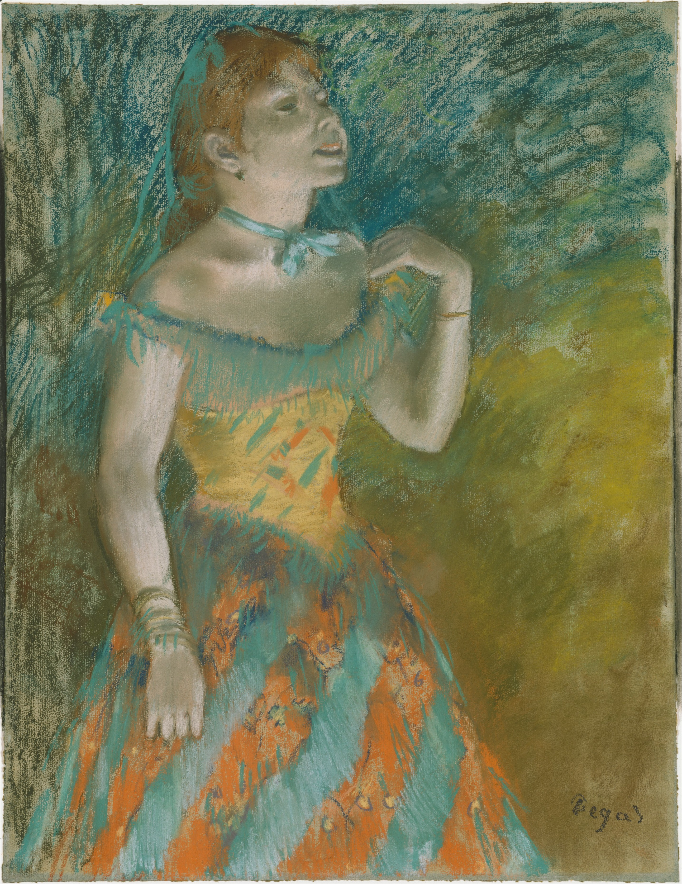
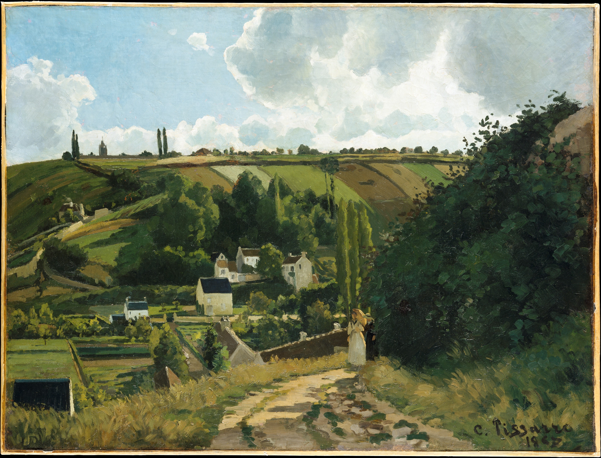
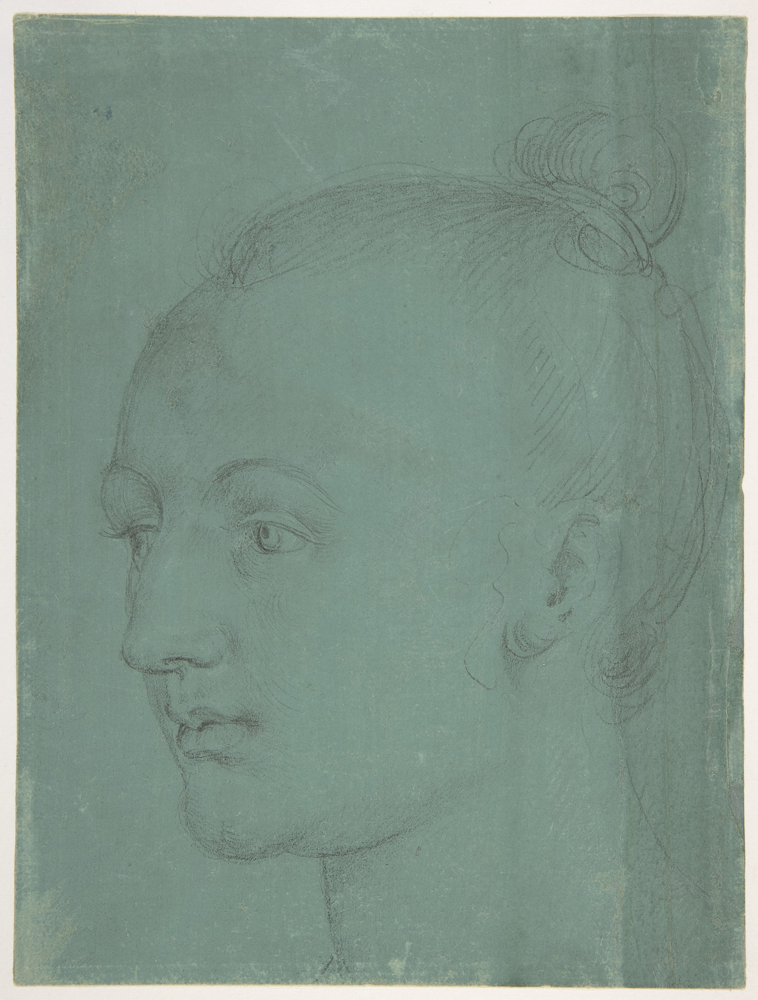
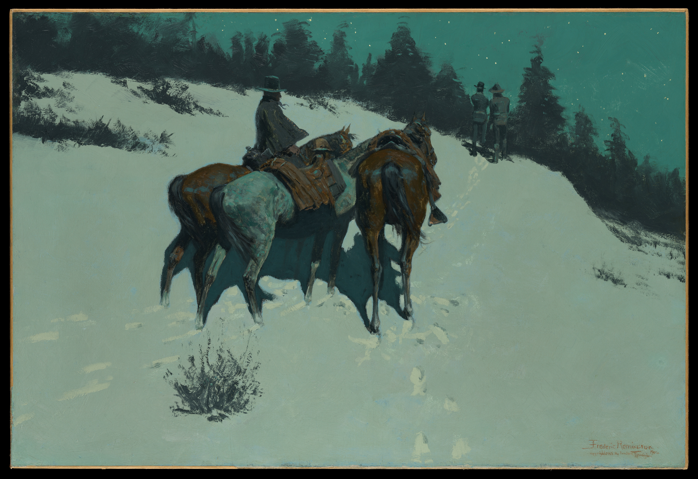
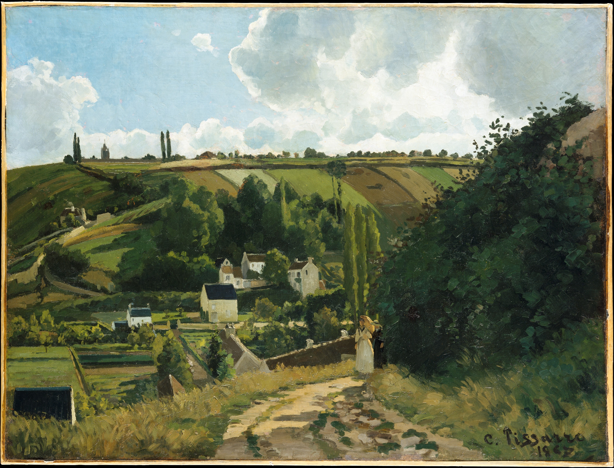
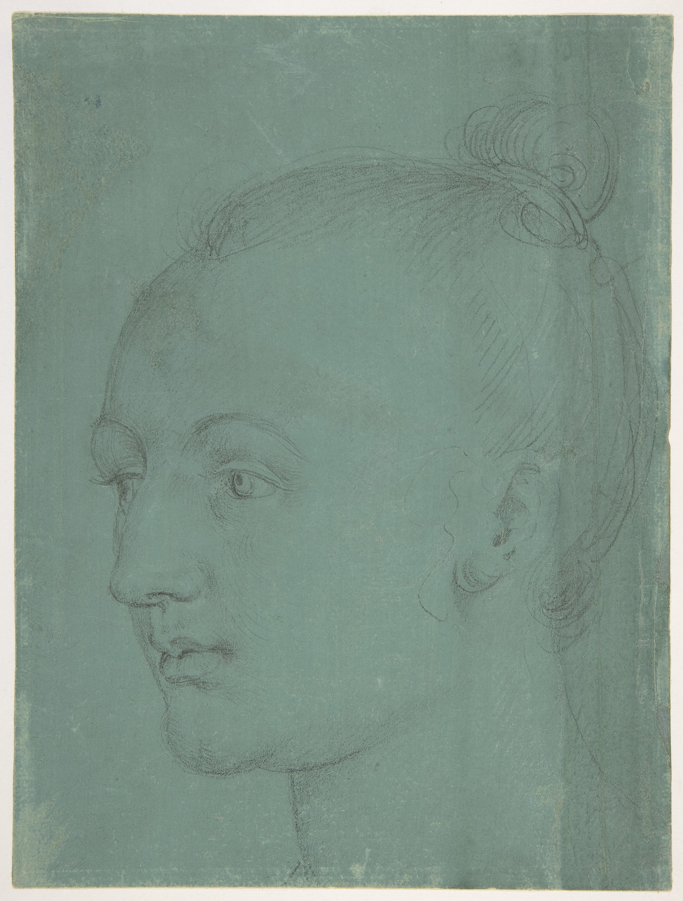
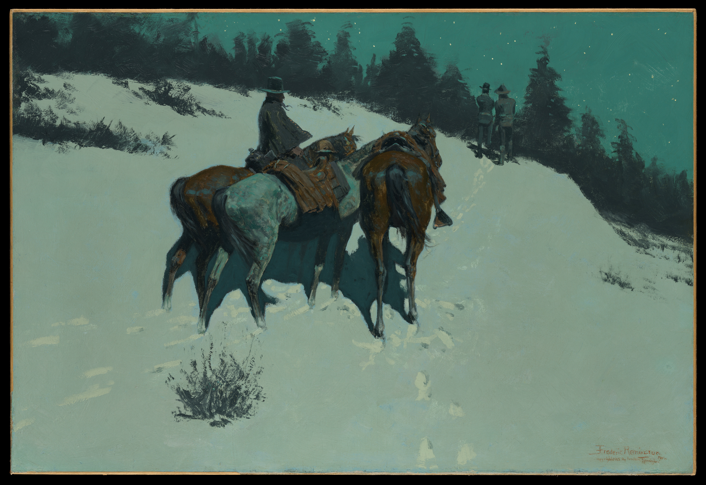

Generative Art and Interpretation
We'll use the Met Museum's open access database and Chromata to compare styles
First, examine these artworks from the Met Museum.
They've been curated based on their color.
Select the image that you like the best by dragging the image to the bottom of the next section

 





The image you've selected should appear below.
Use the DAIJ Structure to critique the artwork you selected below.
Your image will be uploaded into the Chromata Generator
The Chromata Generator is the invention of Michel Bromley, licensed MIT